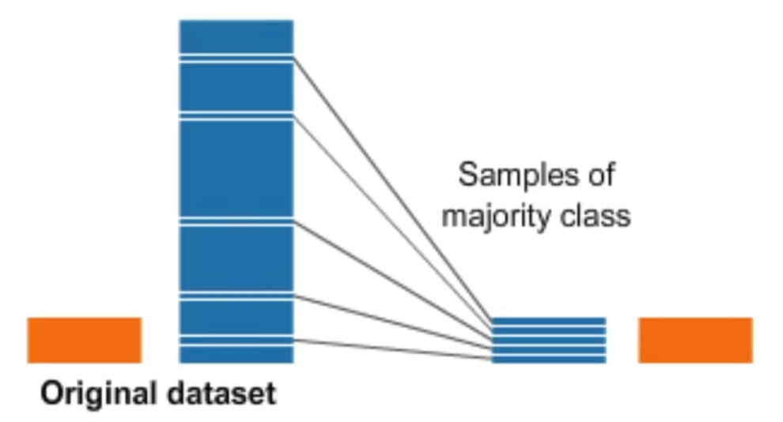
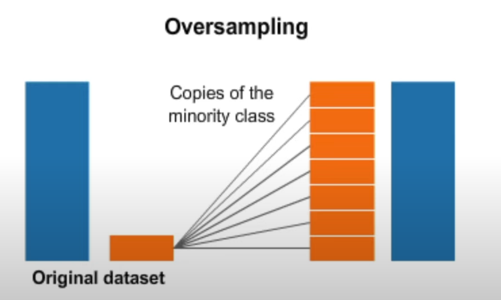

8590 booking with children.110800 bookings with no children.
Only 7% booking with children.Its imbalanced data.Why it causes problems?
The model cannot learn to predict the minority class well because of class imbalance.
Model is only able to learn a simple heuristic (e.g. always predict the dominate class) and it gets stuck in a sub optimal solution.
An accuracy of over 90% can be misleading because the model may not have predictive power on the rare class.

Since we have enough rare class data(at least 1K).Let handle imbalanced data with down sample before training.

If there is no enough rare class data, we will do over smaple method.
1 load package
Code
import osimport pandas as pdimport matplotlib.pyplot as pltimport seaborn as snsimport reimport numpy as npfrom sklearn import treefrom sklearn.model_selection import train_test_splitfrom siuba.siu import callfrom siuba import _, mutate, filter, group_by, summarize,show_query
2 data
2.1 download data
Code
import pandas as pd#url='https://raw.githubusercontent.com/rfordatascience/tidytuesday/master/data/2020/2020-02-11/hotels.csv'hotels=pd.read_csv('data/hotels.csv')
#import mathhotels=hotels>>mutate(children=if_else(_.children >0, True, False))# Create a boolean mask and apply itmask = pd.notna(hotels['children'])hotels = hotels[mask]
2.3 Data Wrangling
Code
# Store target variable of training data in a safe placechildren_train = hotels .children# Concatenate training and test setsdata = hotels
2.4 categorical_cols and numerical_cols
Code
categorical_cols = [cname for cname in data if data[cname].nunique() <10and data[cname].dtype =="object"]numerical_cols = numerical_cols = [cname for cname in data.columns if data[cname].dtype in ['int64', 'float64']]
Code
print("The total number of categorical columns:", len(categorical_cols))print("The total number of numerical columns:", len(numerical_cols))
The total number of categorical columns: 7
The total number of numerical columns: 19
Code
data >> group_by(_.children) >> summarize(n = _.shape[0])
from imblearn.under_sampling import RandomUnderSamplerros=RandomUnderSampler(random_state=0)X_train_resample,Y_train_resample=ros.fit_resample(X_train,Y_train)
before split
Code
Y.value_counts()
children
False 110800
True 8590
Name: count, dtype: int64
after split before downsample:
Code
Y_train.value_counts()
children
False 88646
True 6866
Name: count, dtype: int64
after split after downsample:
Code
Y_train_resample.value_counts()
children
False 6866
True 6866
Name: count, dtype: int64
Code
X_train_resample.shape
(13732, 31)
3 model
3.1 define model
Code
ml_model = tree.DecisionTreeClassifier() ml_model
DecisionTreeClassifier()
In a Jupyter environment, please rerun this cell to show the HTML representation or trust the notebook. On GitHub, the HTML representation is unable to render, please try loading this page with nbviewer.org.
In a Jupyter environment, please rerun this cell to show the HTML representation or trust the notebook. On GitHub, the HTML representation is unable to render, please try loading this page with nbviewer.org.
---title: "Decision tree"subtitle: "with hotel booking imbalanced data"execute: warning: false error: falseformat: html: toc: true toc-location: right code-fold: show code-tools: true number-sections: true code-block-bg: true code-block-border-left: "#31BAE9"---8590 booking with children.110800 bookings with no children.Only 7% booking with children.Its imbalanced data.Why it causes problems?The model cannot learn to predict the minority class well because of class imbalance.Model is only able to learn a simple heuristic (e.g. always predict the dominate class) and it gets stuck in a sub optimal solution.An accuracy of over 90% can be misleading because the model may not have predictive power on the rare class.{width="400"}Since we have enough rare class data(at least 1K).Let handle imbalanced data with down sample before training.{width="400"}If there is no enough rare class data, we will do over smaple method.# load package```{python}import osimport pandas as pdimport matplotlib.pyplot as pltimport seaborn as snsimport reimport numpy as npfrom sklearn import treefrom sklearn.model_selection import train_test_splitfrom siuba.siu import callfrom siuba import _, mutate, filter, group_by, summarize,show_query```# data## download data```{python}import pandas as pd#url='https://raw.githubusercontent.com/rfordatascience/tidytuesday/master/data/2020/2020-02-11/hotels.csv'hotels=pd.read_csv('data/hotels.csv')``````{python}hotels.head()```## data EDAMissing Data```{python}hotels.isnull().sum()``````{python}#import math#hotels=hotels>> filter(math.isnan(_.children)==False)from siuba.siu import callfrom siuba import _, mutate, filter, group_by, summarize,show_queryfrom siuba import*hotels >> group_by(_.children) >> summarize(n = _.shape[0])``````{python}#import mathhotels=hotels>>mutate(children=if_else(_.children >0, True, False))# Create a boolean mask and apply itmask = pd.notna(hotels['children'])hotels = hotels[mask]```## Data Wrangling```{python}# Store target variable of training data in a safe placechildren_train = hotels .children# Concatenate training and test setsdata = hotels```## categorical_cols and numerical_cols```{python}categorical_cols = [cname for cname in data if data[cname].nunique() <10and data[cname].dtype =="object"]numerical_cols = numerical_cols = [cname for cname in data.columns if data[cname].dtype in ['int64', 'float64']]``````{python}print("The total number of categorical columns:", len(categorical_cols))print("The total number of numerical columns:", len(numerical_cols))``````{python}data >> group_by(_.children) >> summarize(n = _.shape[0])```## split data```{python}Y=data['children']X=data.drop('children', axis=1)X_train,X_test,Y_train,Y_test=train_test_split(X,Y,train_size =0.8)``````{python}from imblearn.under_sampling import RandomUnderSamplerros=RandomUnderSampler(random_state=0)X_train_resample,Y_train_resample=ros.fit_resample(X_train,Y_train)```before split```{python}Y.value_counts()```after split before downsample:```{python}Y_train.value_counts()```after split after downsample:```{python}Y_train_resample.value_counts()``````{python}X_train_resample.shape```# model## define model```{python}ml_model = tree.DecisionTreeClassifier() ml_model```## train modeltrain on resample data```{python}ml_model.fit(X_train_resample[numerical_cols],Y_train_resample)```variable importance```{python}importances = ml_model.feature_importances_vi=pd.DataFrame({"variable":X_train_resample[numerical_cols].columns,"importances":importances})#vi=vi.sort_values('importances',ascending=False)#vi```## Preformance```{python}#Using predict method to test the modelY_pred_dt = ml_model.predict(X_test[numerical_cols]) #always gets x and retuns y``````{python}import collections, numpycollections.Counter(Y_pred_dt)```predict 25% have children,the truth is only 7% have children,because we have make downsample before training.```{python}5977/(5977+17901)``````{python}collections.Counter(Y_test)1762/(22116+1762)```a) Accuracy```{python}# Accuracy = true negatives + true positives / true positives + false positives + true negatives + false negatives# Here is another way to find the accuracy scorefrom sklearn import metricsaccuracy = metrics.accuracy_score(Y_test,Y_pred_dt) accuracy```b) Precision```{python}# Precision = true positive / true positive + false positiveprecision_dt = metrics.precision_score(Y_test,Y_pred_dt) precision_dt```c) Recall```{python}# Recall = true positive / true positive + false negativerecall_dt = metrics.recall_score(Y_test,Y_pred_dt) recall_dt```d) Confusion matrix```{python}import seaborn as snsconfusion_matrix_dt = metrics.confusion_matrix(Y_test,Y_pred_dt)confusion_matrix_dt``````{python}from sklearn.metrics import ConfusionMatrixDisplayConfusionMatrixDisplay(confusion_matrix_dt).plot()```e) AUC - ROC Curve```{python}auc_dt = metrics.roc_auc_score(Y_test, Y_pred_dt) # as the documentation explain, the main parameters are: y_true and y_scoreauc_dt``````{python}fpr, tpr, thresholds = metrics.roc_curve(Y_test, Y_pred_dt)roc_auc = metrics.auc(fpr, tpr)display = metrics.RocCurveDisplay(fpr=fpr, tpr=tpr, roc_auc=roc_auc, estimator_name='example estimator')display.plot()plt.show()```## k-Fold Cross-Validation```{python}import numpy as npfrom sklearn.model_selection import KFoldfrom sklearn.model_selection import cross_val_score``````{python}kf_dt = KFold(n_splits=5,shuffle=True) cv_dt = cross_val_score(ml_model, X_train[numerical_cols], Y_train, cv=kf_dt)np.mean(cv_dt)```## save model```{python}from joblib import dump, loaddump(ml_model, 'trained_model_1.joblib') ```## load model```{python}ml_model_reload = load('trained_model_1.joblib') ``````{python}Y_pred_dt = ml_model_reload.predict(X_test[numerical_cols]) #always gets x and retuns yY_pred_dt[0:5]```# reference:imblearn package: https://imbalanced-learn.org/https://www.youtube.com/watch?v=GR-OW5asKlkhttps://www.youtube.com/watch?v=hl5EBA821t0